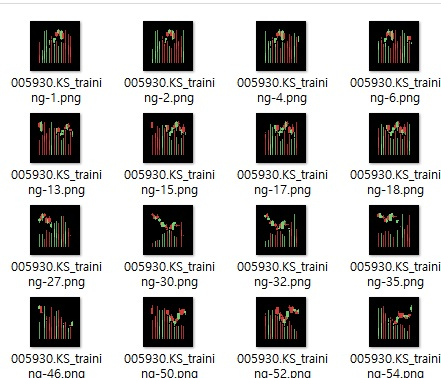

- 머신러닝 및 딥러닝을 활용해 주식Data를 학습/예측하는 CNN 모델을 구현해보자
정확하게는 기업별 종가의 상승/하락 예측
- 참고도서: 퀀트 전략을 위한 인공지능 트레이닝
- 작업설명: 참고도서의 Python 버전을 Juputer nootebook버전으로 변경
작업순서
1 | 1.야후주식->데이터 다운로드->CSV저장 |
주식 데이터 다운로드
회사별 주식코드 조회
1 | code_df = pd.read_html('http://kind.krx.co.kr/corpgeneral/corpList.do?method=download', header=0)[0] |
기업코드 조회 및 주식데이터 조회
1 | # 참고: https://wendys.tistory.com/174 |
데이터 별 라벨링(Up-1, Down-0)
주식 데이터 CSV 다운로드
1 | def fetch_yahoo_data(ticker, start_date, end_date, fname, max_attempt, check_exist): |
라벨링
- 상승세: 1, 하락세:0 으로 하루데이터별 txt파일 저장
1
2
3
4
5
6
7
8
9
10
11
12
13
14
15
16
17
18
19
20for i 0, ldf)):
c = df.iloc[i:i +seq_len), :]
starting = 0
endvalue = 0
= ""
lc) ==seq_len):
# starting = c["Close"].iloc[-2]
starting = c["Open"].iloc[-1]
endvalue = c["Close"].iloc[-1]
# pf'endvalue {endvalue} - starting {starting}')
tmp_rtn = endvalue / starting -1
tmp_rtn > 0:
= 1
:
= 0
with"{}_label_{}.txt".([3][:-4], seq_len), 'a') the_file:
the_file.write("{}-{},{}".([3][:-4], i, ))
the_file.write("\n")
이미지 Candle chart 저장
- 주식지표를 이미지로 그리는 라이브러리 사용(candlestick2_ochl)
- https://github.com/matplotlib/mpl-finance -> (변경됨) https://github.com/matplotlib/mplfinance 
1
2
3
4
5
6
7
8
9
10
11
12
13
14
15
16
17
18
19
20
21
22
23
24
25
26
27
28
29
30
31
32
33
34
35
36
37
38
39
40
41for i in range(0, len(df)-int(seq_len)):
# ohlc+volume
c = df.iloc[i:i + int(seq_len), :]
if len(c) == int(seq_len):
my_dpi = 96
fig = plt.figure(figsize=(dimension / my_dpi, dimension / my_dpi), dpi=my_dpi)
ax1 = fig.add_subplot(1, 1, 1)
candlestick2_ochl(ax1, c['Open'], c['Close'], c['High'],c['Low'],
width=1,colorup='#77d879', colordown='#db3f3f')
ax1.grid(False)
ax1.set_xticklabels([])
ax1.set_yticklabels([])
ax1.xaxis.set_visible(False)
ax1.yaxis.set_visible(False)
ax1.axis('off')
# create the second axis for the volume bar-plot
# Add a seconds axis for the volume overlay
if use_volume:
ax2 = ax1.twinx()
# Plot the volume overlay
bc = volume_overlay(ax2, c['Open'], c['Close'], c['Volume'],
colorup='#77d879', colordown='#db3f3f', alpha=0.5, width=1)
ax2.add_collection(bc)
ax2.grid(False)
ax2.set_xticklabels([])
ax2.set_yticklabels([])
ax2.xaxis.set_visible(False)
ax2.yaxis.set_visible(False)
ax2.axis('off')
pngfile = 'dataset/{}_{}/{}/{}/{}-{}.png'.format(
seq_len, dimension, symbol, dataset_type, symbol+"_"+dataset_type, i)
fig.savefig(pngfile, pad_inches=0, transparent=False)
plt.close(fig)
# Alpha 채널 없애기 위한.
from PIL import Image
img = Image.open(pngfile)
img = img.convert('RGB')
img.save(pngfile)
이미지 라벨별 폴더이동
데이터별 폴더 이동
- 학습할 이미지를 1, 0 폴더로 이동
소스1(주식 데이터 다운로드 생성)
CNN 모델설계
- CNN(conv2d) 모델 설계
이미지 데이터에서 label(상승-1, 하락-1)을 예측하는 softmax 모델 구현해보자
def build_model(SHAPE, nb_classes, bn_axis, seed=None):
input_layer = Input(shape=SHAPE)
# (2021/03/10,juk) init -> kernel_initializer, border_mode -> padding
# Step 1
x = Conv2D(32, 3, 3, kernel_initializer ='glorot_uniform', padding='same', activation='relu')(input_layer)
# Step 2 - Pooling
x = MaxPooling2D(pool_size=(2, 2), padding='same')(x) # (2021/03/10,juk) add padding='same'
# Step 1
x = Conv2D(48, 3, 3, kernel_initializer ='glorot_uniform', padding='same',activation='relu')(x)
# Step 2 - Pooling
x = MaxPooling2D(pool_size=(2, 2), padding='same')(x)
x = Dropout(0.25)(x)
# Step 1
x = Conv2D(64, 3, 3, kernel_initializer ='glorot_uniform', padding='same', activation='relu')(x)
# Step 2 - Pooling
x = MaxPooling2D(pool_size=(2, 2), padding='same')(x)
# Step 1
x = Conv2D(96, 3, 3, kernel_initializer ='glorot_uniform', padding='same', activation='relu')(x)
# Step 2 - Pooling
x = MaxPooling2D(pool_size=(2, 2), padding='same')(x)
x = Dropout(0.25)(x)
# Step 3 - Flattening
x = Flatten()(x)
# Step 4 - Full connection
x = Dense(256, activation='relu')(x) # (2021/03/10,juk) output_dim=256 -> 256
# Dropout
#x = Dropout(0.5)(x)
x = Dense(2, activation='softmax')(x)
model = Model(input_layer, x)
model.summary()
return model
성능평가
- 주식데이터의 예측 성능은 50% 전후를 넘지 않는다고 한다.(아직 납득하지 못함;;)
- 상승/하락을 예측하기 위해선 여러가지 변수(재무재표,경제지표 등등)가 상식적으로 필요하겠지만, 여기서는 주가데이터(candle chart:open/close 등)만으로 학습하였고, 이에대한 결과이다.
소스2(학습/예측/성능평가)
총평
- 주가데이터 및 Candle-Chart로 기업 주식의 상승/하락을 예측하는 딥러닝 모델을 구현해 봤다.
- 주가 데이터를 이미지로 활용/전처리하는 방법을 catch하게이는 충분한 예제인거 같다.